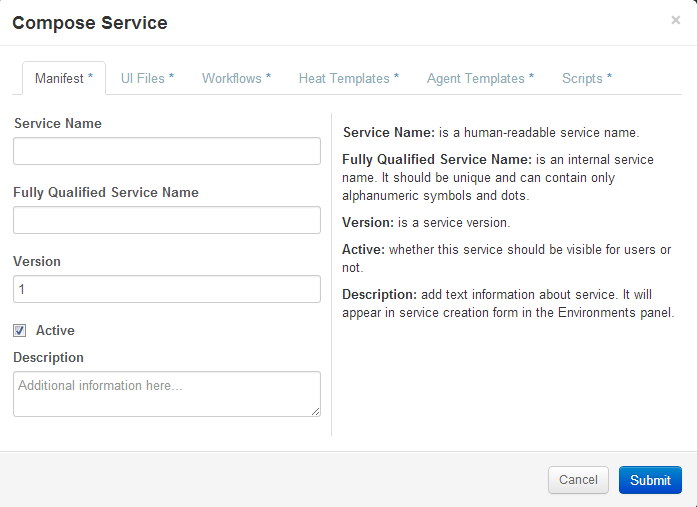
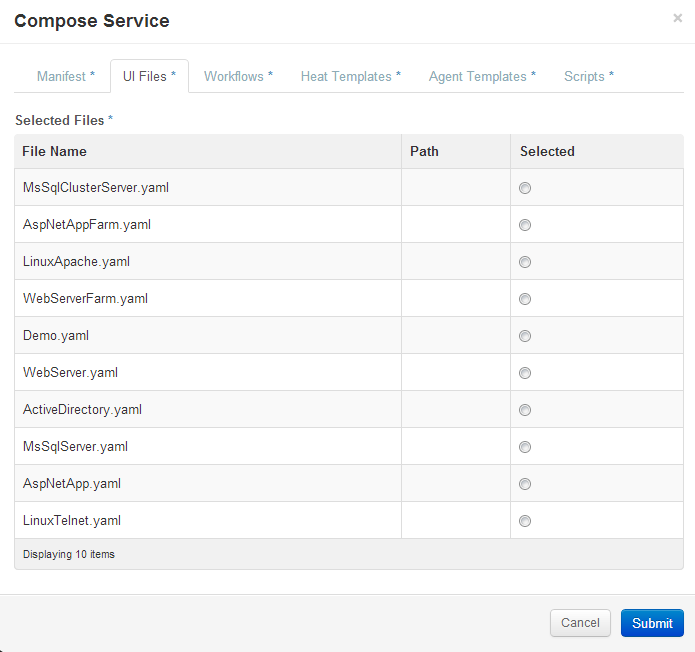
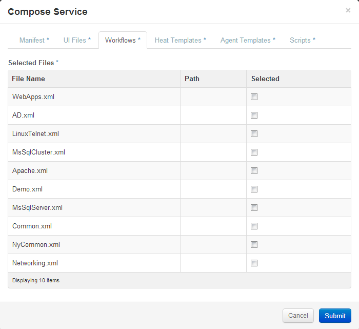

Let's review service creation in details. After clicking on "Compose Service" button from "Service Definitions" view you'll see the following form:
|  |
It consists of several tabs. On the first tab you need to fill up general information about service. On the next tab select one of the UI definitions you want to use for this service. You can upload new definition in the Manage Files view.
|  |
All other tabs correspond to data types. Navigate to desired tab and select files for service dependency.
The only mandatory requirement for a new service is a UI definition file - if a service doesn't reference any, it won't be shown in the
"Create Service" form. All other tabs refer to a files required for a service's deployment phase.
|  |